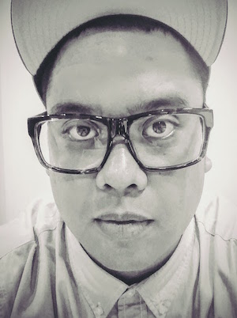

Failure initiates the journey
In December of 2013, I remember failing an interview for an ed-tech position in Oregon.
The interviewer told me that one of their teachers wanted to make the 'switch from using Dreamweaver to writing her own CSS'. Then, he asked for my recommendation.
"I apologize, I have no idea", I replied.
My heart sunk in that moment, realizing that I had just dropped the chances of switching my career path and improving my family's situation.
That specific failure (having no idea what CSS was), led me down an interesting path, filled with curiosity and opportunity. As a result, my wife and I packed my family up and moved from San Diego to Austin, where I would learn to code and find an entirely new career.
Since that decision, our lives have changed for the best. As a family, we sacrificed the comforts of being close to our loved ones and all that was familiar, just to 'make it' here in Austin.
Less than a year and a half after that failed interview, I am more than grateful to announce that I am a Software Developer at IBM. I believe that we are very, very fortunate. And, I have strong faith that my personal momentum has still yet to peak.
God is dope.